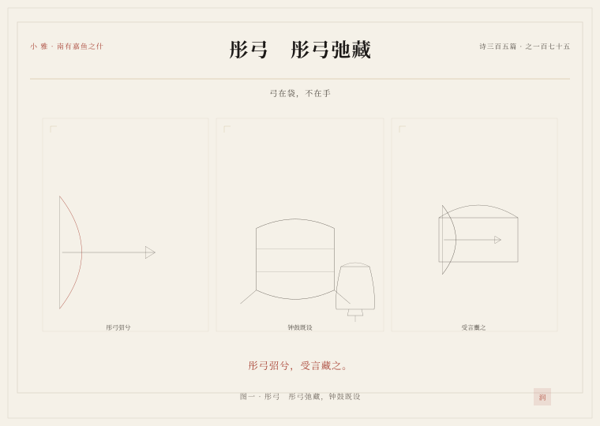
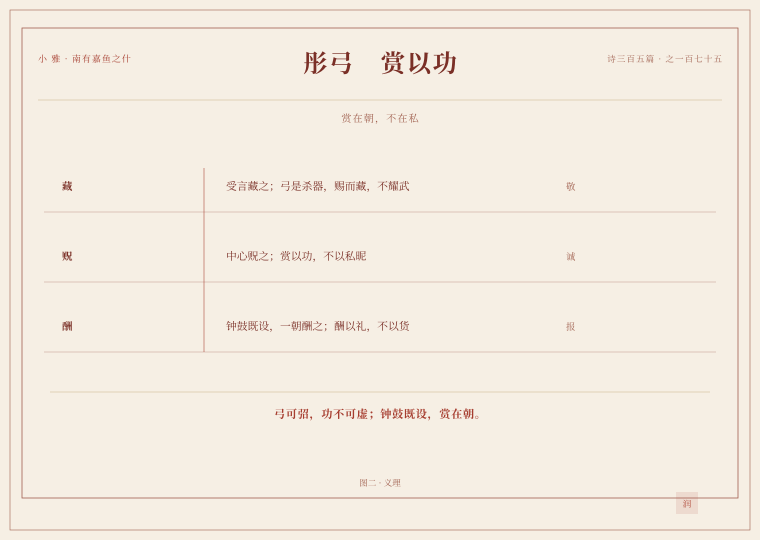

第一百七十五篇 彤弓
小雅 · 南有嘉鱼之什 SJ175
朗读 · 普通话
依经文原文朗读，章次不读出；配古琴底乐，不改速、不加拖腔。全库同一音色（豆包 TTS），非播音员录制。
一 解题
诗三判：
- 谁在说：天子赐有功诸侯，或受赐者。彤弓弛而受藏，钟鼓既设，一朝飨之。
- 说什么事：三章。每章以「彤弓弨兮」起，受言「藏、载、櫜」，中心「贶、喜、好」，一朝「飨、右、酬」。
- 为何编在此：湛露燕诸侯，彤弓赐有功；燕以亲之，赐以劝之。
小雅由礼入赏。
《毛序》：「《彤弓》，天子锡有功诸侯也。」
朱子《诗集传》：「赋也。彤弓，朱弓也。弨，弛貌。受言藏之，受而藏之也。贶，赐也。飨，燕飨也。」二章：「载，载以行也。右，劝也。」三章：「櫜，弓袋也。酬，报也。」
本库的看法：《彤弓》不是一首赏赐诗，是一首「以弓藏见礼」的诗。
弓是杀器，赐而「受言藏之」，不使之耀；钟鼓既设，然后一朝飨之：赏在朝，不在私；弓在袋，不在手。
三章由藏而载而櫜，由贶而喜而好，由飨而右而酬：受者愈恭，赐者愈厚。
须辨：彤弓是朱漆弓，不是红弓泛称；弨是弛，不是超；贶是赐，不是况；右是劝，不是右方；櫜是弓袋，不是囊括。断语：弓可弨，功不可虚；钟鼓既设，赏在朝。
先辨五事：「彤弓」是朱漆弓，不是红弓泛称；「弨」是弛，不是超；「贶」是赐，不是况；「右」是劝，不是右边；「櫜」是弓袋，不是囊括。
二 经文
第一章
彤弓弨兮，受言藏之。我有嘉宾，中心贶之。
钟鼓既设，一朝飨之。
第二章
彤弓弨兮，受言载之。我有嘉宾，中心喜之。
钟鼓既设，一朝右之。
第三章
彤弓弨兮，受言櫜之。我有嘉宾，中心好之。
钟鼓既设，一朝酬之。
三 韵读
- 一章：弨、藏、贶、飨，阳部相叶。声庄。
- 二章：弨、载、喜、右，之部相叶。声喜。
- 三章：弨、櫜、好、酬，幽部相叶。声厚。
读法：三章只换「藏、载、櫜」与「飨、右、酬」。藏是敬，载是行，櫜是收；飨是燕，右是劝，酬是报。
一进一退，皆有礼。
四 字义与名物
- 彤弓：朱漆弓。弨：弛貌。受言：受而。藏：藏之于家。嘉宾：有功诸侯。中心：心中。贶：赐。钟鼓：乐器。一朝：终朝、一旦。飨：燕飨。
- 载：载以行。喜：喜之。右：劝、助。
- 櫜：弓袋。好：爱好。酬：报、酬酢。
五 今译
一章：朱漆弓松弛，受而藏起。我有嘉宾，心中赐之。钟鼓既设，一朝燕飨。
二章：朱漆弓松弛，受而载行。我有嘉宾，心中喜之。钟鼓既设，一朝劝之。
三章：朱漆弓松弛，受而收入弓袋。我有嘉宾，心中好之。钟鼓既设，一朝酬之。
六 章旨
- 一章：弓弨而藏，是「收敛」；中心贶，是「赐诚」；一朝飨，是「礼显」；藏而后飨，不私赐。
- 二章：弓弨而载，是「行赏」；中心喜，是「喜功」；一朝右，是「劝」；赏以劝，不以贿。
- 三章：弓弨而櫜，是「收功」；中心好，是「好德」；一朝酬，是「报」；酬以礼，不以货。
七 诗教
- 赏不耀武：弓是杀器，赐而藏之；耀弓于朝，则赏成威。
- 赏以功：嘉宾是有功诸侯，不是亲昵；无功之赏，则钟鼓虚设。
- 受赏有恭：藏、载、櫜，皆受者之恭；受而不恭，则赐者失礼。
八 分寸与边界
- 不把「彤弓」读成红弓泛称：彤弓是朱漆之弓；泛称，则「彤」字落空。
- 不把「弨」读成超：弨是弛；读成超，则弓不可藏。
- 不把「贶」读成况：贶是赐；读成况，则「中心贶之」无义。
- 不把「右」读成右边：右是劝；读成方位，则「一朝右之」不成礼。
- 不把「櫜」读成囊括：櫜是弓袋；读成括，则弓入袋成包罗。
九 存疑
- 诗旨：毛序「天子锡有功诸侯」，朱子从之；一说「受赐者作」。本库从赐功，兼取受者之辞。
- 「彤弓」：毛传「朱弓也」；从朱漆。
- 「右」：毛传「劝也」；从劝。
- 「酬」：毛传「报也」；从酬报。
- 「一朝」：毛传「一朝，终朝也」；从终朝。
十 跨典
- 《礼记·射义》「射者，仁之道也」；此篇彤弓，是射礼之赏。
- 《尚书》「功懋懋赏」；此篇赏有功，是懋赏。
- 《论语》「赐也，非尔所及也」；赏有等，此篇见之。
十一 双卡与图
六对：
| 彤弓（朱漆弓） |
彤弓（红弓泛称） |
| 弨（弛） |
弨（超） |
| 贶（赐） |
贶（况） |
| 右（劝） |
右（右边） |
| 櫜（弓袋） |
櫜（囊括） |
| 酬（报） |
酬（应酬） |

图一 · 彤弓 彤弓弛藏，钟鼓既设

图二 · 彤弓 赏以功，不耀武